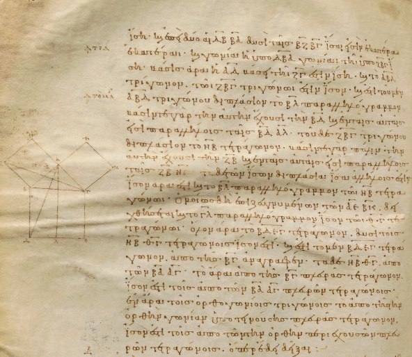

Euclid Elements
- Volume A Books 1,2,3,4. You may read and get it from archive Euclid A.
- Volume B Books 5,6,7,8,9. You may read and get it from archive Euclid B.
- Volume C Books 10. You may read and get it from archive Euclid C.
- Volume D Books 11,12,13. You may read and get it from archive Euclid D.
- Books 1,2,3,4. You may download them from here. You may also check the html version of Elements.
- Golden Section(Χρυσή Τομή). You may also interact with the Geogebra image.
Archimedes
- Book of Lemmas. (Greek and English text) In archive Book of Lemmas (English).
- Book of Lemmas. (Greek text) In archive Book of Lemmas (Greek).
- Measurement of circle. (Greek text) In archive Kyclou Metrisis.
- Construction of a heptagon Download.
- The cattle problem (Πρόβλημα Βοεικόν) Download.
- Thimaridas Download.
Algebra
- Αλγεβρα Α Λυκείου Download.
Analysis

